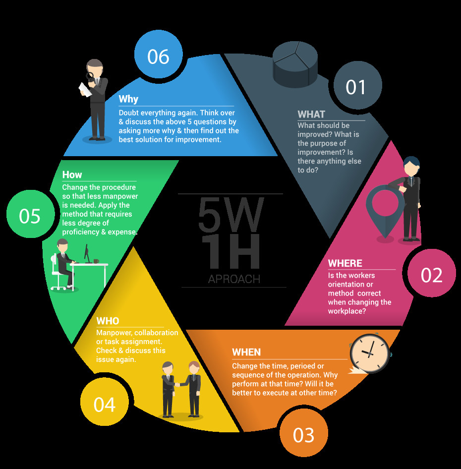

1. Structure of a Security Alert
A high-quality alert must supply enough structured data for an analyst to answer the 5W1H questions — Who, What, When, Where, Why, and How. Without this, even a real threat can be misclassified or actioned too slowly. Below are the eight mandatory fields every alert should carry.

Alert Name / Rule ID
A concise, unambiguous name paired with the exact logic or condition that fired the rule.
Source
Origin of the activity — a User account, a Host name, or a source IP address.
Destination
Target of the activity — a Service, Domain, or destination IP address.
Timestamp
Both when the event occurred and when the alert was generated — these can differ due to ingestion latency.
Action
The outcome: Allowed, Blocked, Succeeded, or Failed.
Severity
Seriousness level: Critical → High → Medium → Low → Informational.
Artifacts / IOCs
Tangible evidence: URLs, file hashes, process names, malicious IPs, registry keys.
Context
Is the user a VIP? Is the asset internet-facing or critical? Context determines true impact.
2. Alert Classification
Every alert a SOC analyst reviews must be assigned one of five classifications. Getting this right directly determines whether a real threat gets contained or ignored — and whether your detection rules stay clean or generate noise.

| Classification | Definition | Required Action |
|---|---|---|
| True Positive (TP) | A real, confirmed malicious behaviour backed by evidence. | Contain the threat and escalate to Tier 2/3 or the IR team immediately. |
| False Positive (FP) | A false alarm — legitimate activity incorrectly flagged as a threat. | Tune the detection rule or whitelist the activity to reduce future noise. |
| Need More Info (NMI) | Insufficient data available to reach a confident conclusion. | Collect additional logs or verify with the user or IT department. |
| True Negative (TN) | System is healthy; no alert fired and no real threat exists. | No action required — this is normal, healthy operation. |
| False Negative (FN) ⚠️ | Most dangerous outcome: a real attack is in progress but the system fails to alert. | Improve detection coverage — close the blind spot that allowed this to go undetected. |
False Negatives are the most dangerous because they are invisible by definition — you only discover them after a breach. Regular purple-team exercises and coverage reviews help surface these gaps proactively.
3. SOC Analyst Mindset & Principles
Technical skills get you to the door — mindset gets you through it. These four principles separate analysts who close incidents cleanly from those who either escalate everything or miss the real threats.

Evidence over Emotion
Never classify an alert based on gut feel or instinct. Every verdict must be traceable to concrete evidence in the log data.
Context is King
A High-severity alert with zero context is less actionable than a Medium alert with rich contextual data. Always enrich before deciding.
Maintain Visibility
Never disable a security control just to silence False Positives. Tune the rule instead — disabling a sensor creates an instant blind spot.
Collaboration
SOC work is a team sport. Don't silo yourself — escalate when uncertain, loop in Tier 2 early, and share findings with your team.
4. Operational Workflow
Every security alert follows an 8-step lifecycle from the triggering behaviour to the final feedback loop. Understanding this pipeline helps analysts know exactly where they sit in the process — and what the next handoff looks like.

Behaviour
A user logs in, accesses a website, runs a process, or any other monitored action occurs in the environment.
Log Generation
The behaviour is captured by security telemetry sources — EDR agents, firewall logs, cloud audit trails, identity providers.
Collection & Normalisation
Raw logs are shipped to the SIEM, parsed, normalised into a consistent schema, and made queryable.
Detection
SIEM rules match against the normalised data. Results are enriched with context — GeoIP lookups, VirusTotal reputation, asset criticality.

Alerting
A structured alert is generated: alert name, severity score, source/destination, and all extracted artifacts are attached.
Triage
The Tier-1 analyst reviews the alert, gathers additional context, and builds an event timeline to understand scope.

Decision
A verdict is reached: TP → escalate & contain, FP → tune, NMI → gather more data.
Feedback Loop
Detection rules are tuned, playbooks updated, and whitelists refined — so the next similar event is handled faster and more accurately.


5. Case Study — Impossible Travel Detected
The following case demonstrates how the framework above applies to a realistic alert. An "Impossible Travel" alert fires when the same account authenticates from two geographically separated locations within a time window that makes physical travel impossible — a strong indicator of credential compromise or proxy abuse.

Alert Details
Recommended Response Workflow
-
Auto-check IP reputation immediately
Run
94.159.113.15through VirusTotal, AbuseIPDB, and Cisco Talos. Flag if the IP resolves to a known malicious exit node, Tor relay, or commercial VPN provider (NordVPN, ExpressVPN, etc.). -
Review user login history (last 30 days)
Does
thuy.leregularly use a VPN or travel internationally? Check for any prior High-severity alerts on this account — failed logins followed by success, or unusual file access bursts. -
Out-of-band verification with the user
Contact via a trusted channel (Teams, Slack, or phone call — never email, which may be compromised). Ask directly: "Are you currently travelling or using a VPN for work purposes?"
-
Immediate containment if suspicious
If the IP is flagged or the user denies the activity: reset the password, revoke all active sessions across all devices, and enforce MFA re-enrollment. Do not wait for confirmation before containing.
-
Review post-login activity
What did the account do after the suspicious login? Look for mass data downloads, security setting changes, new account creation, or lateral movement to other systems. This determines scope and whether escalation to IR is needed.
Key Takeaways
- Every alert needs the 8 structural fields to be actionable — missing context kills analyst speed.
- False Negatives are silent killers; active detection gap reviews are as important as tuning FP noise.
- Context beats severity — a Medium alert with rich context beats a Critical alert with nothing to go on.
- Never disable a control to stop FP noise — tune the rule, preserve the visibility.
- The feedback loop (Step 8) is what separates a maturing SOC from one that fights the same fires repeatedly.
- Impossible Travel investigations must include out-of-band user verification before clearing or escalating.